第 1 页：封面
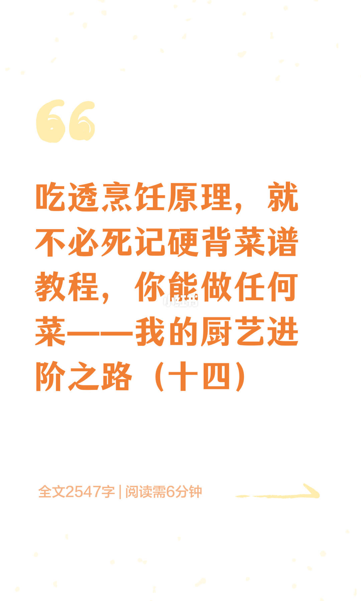
1/14封面：吃透原理不必死记菜谱——厨艺进阶之路（十四）；约2547字。
Cover: principles over rote recipes—culinary path (14).
本篇围绕鱼虾去腥、香味来源、调味时序与汤色。
第 2 页：逢鱼虾必用酸
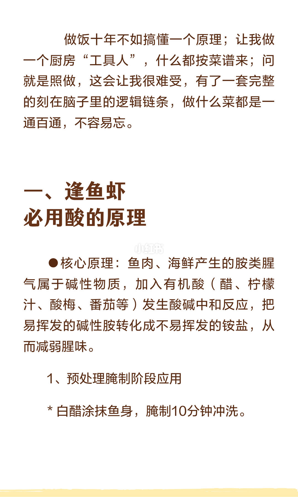
2/14胺类腥气偏碱，醋柠檬等有机酸中和成铵盐降腥；白醋涂鱼腌10分钟冲洗。
Amines are alkaline—organic acids neutralize to less-volatile salts; vinegar prep.
逻辑链进脑，比十年照方更稳。
第 3 页：酸的场景与物理清理
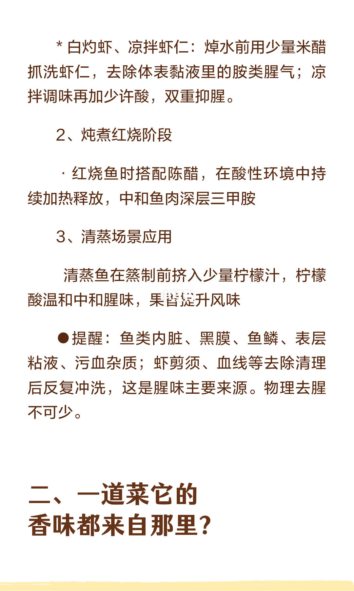
3/14白灼凉拌用米醋抓洗；红烧配陈醋；清蒸挤柠檬；内脏黑膜血线等物理去腥不可少。
Acid by scene + always clean guts, membranes, blood—physical deodorizing first.
下一节转入：香味从哪里来。
第 4 页：香味三反应
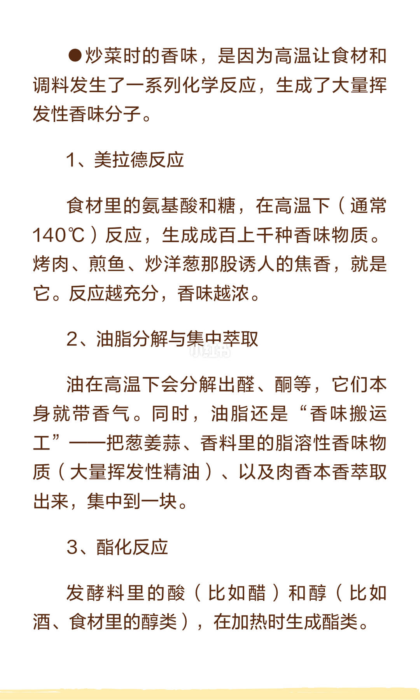
4/14炒香来自高温化学：美拉德（约140℃）、油脂分解与脂溶萃取、发酵料酯化。
Aroma = Maillard + fat extraction/breakdown + esterification of ferments.
挥发性分子被高温与油脂「搬」出来。
第 5 页：先调色
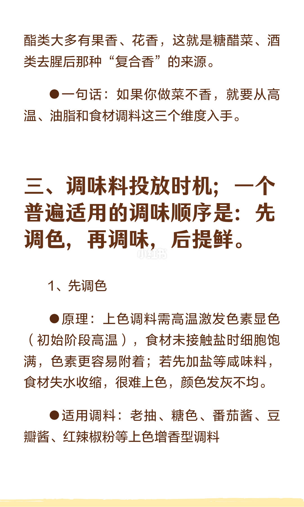
5/14调味顺序：先调色再调味后提鲜；未沾盐时细胞饱满更易上色，先盐则发灰不均。
Color first (dark soy/caramel/douban), then season, then umami—salt early blocks color.
不香就查：高温、油脂、调料三维。
第 6 页：再调味后提鲜
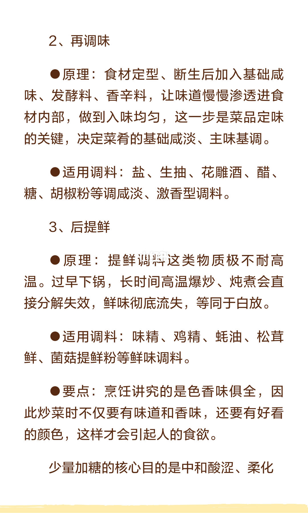
6/14成形断生后再下盐酱油料酒等定味；味精鸡精蚝油等高鲜忌早下久焯，会分解失效。
Salt/ferments after shape set; MSG-like umami last—heat destroys them early.
少量糖中和酸涩、柔化锋利咸酸。
第 7 页：余温防炒老
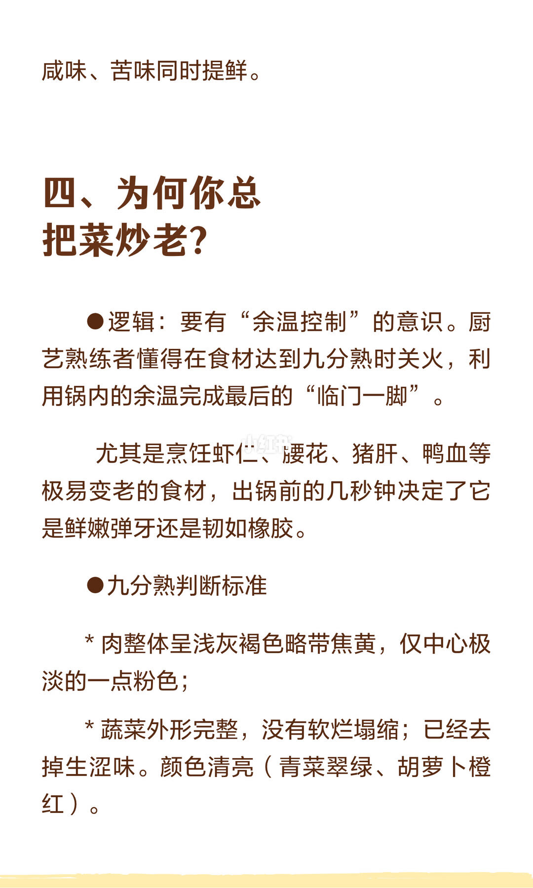
7/14总把菜炒老？九分熟关火吃余温；虾仁腰花猪肝鸭血最后几秒定嫩或橡皮。
Kill heat at ~90% done; residual heat finishes shrimp/liver without rubber.
肉呈浅灰褐心微粉；菜形完整色亮无生腥。
第 8 页：锅边醋
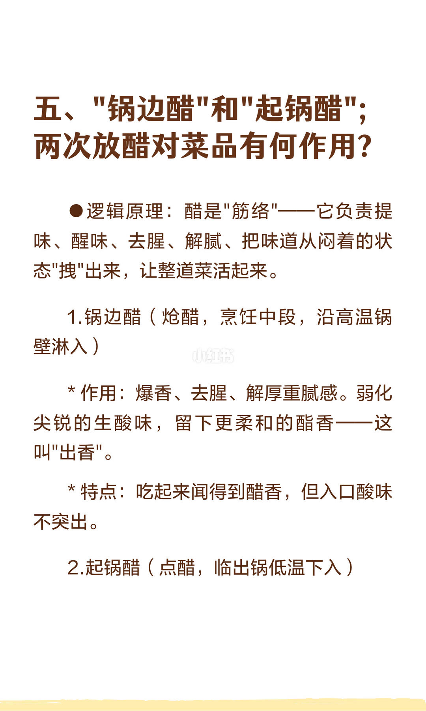
8/14锅边醋（中段沿热锅壁）：爆香去腥解腻，闻得到醋香、尝酸不冲——出香。
Mid-cook wok-edge vinegar: aroma without sharp sour—fragrance first.
醋是「筋络」，把闷味拽活。
第 9 页：起锅醋与断生调味
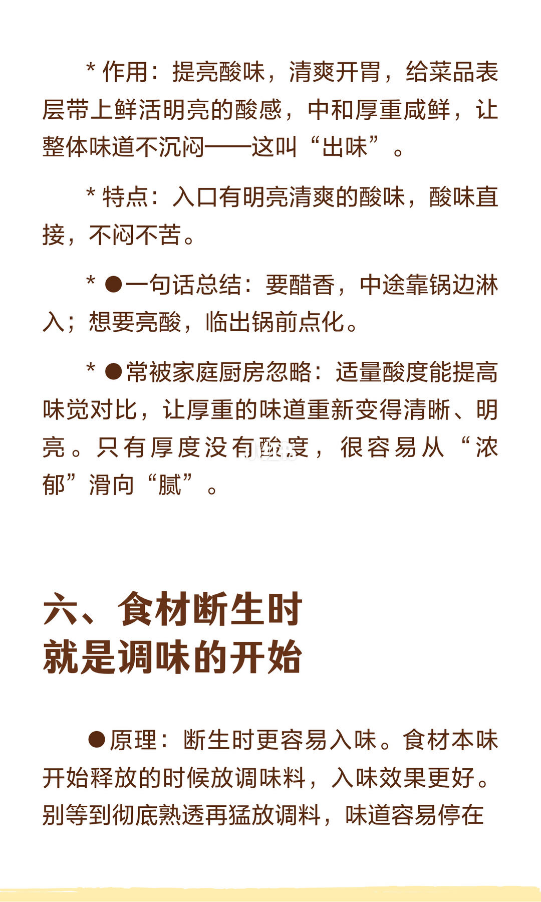
9/14起锅醋点亮酸感（出味）；只浓无酸易腻。食材断生时开始调味，味更易渗入。
Finish vinegar for bright sour; season when just cooked through for penetration.
要香淋锅边，要酸点起锅。
第 10 页：断生标准与炖鱼不香
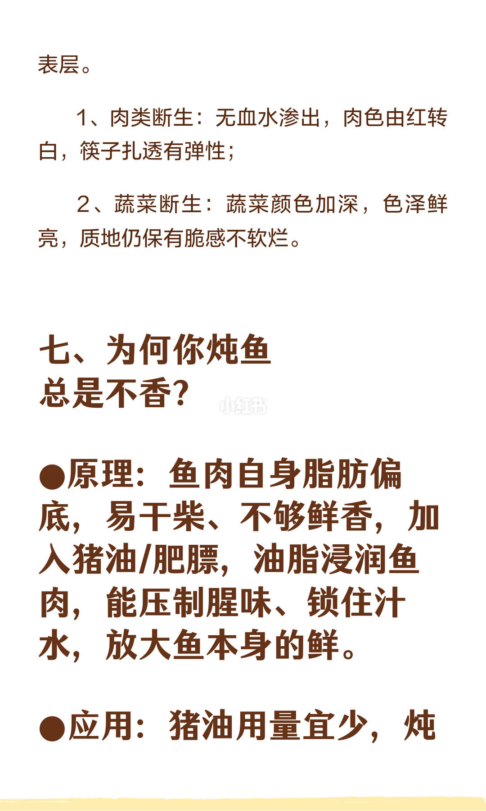
10/14肉断生无血水变白有弹性；菜断生色深仍脆。炖鱼不香因脂肪低——加猪油/肥膘润肉锁汁抑腥。
Doneness cues; low-fat fish needs lard/fat to moisten, suppress fishiness, boost savor.
油脂量宜少，重在浸润。
第 11 页：大火奶白汤
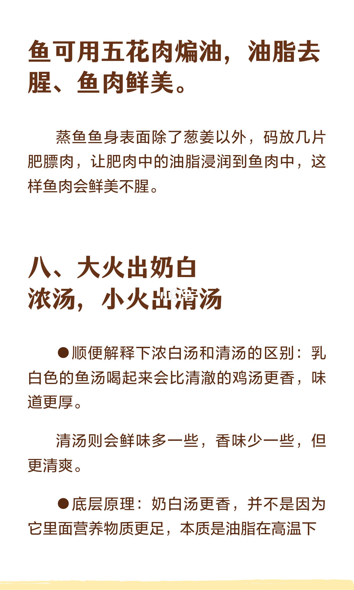
11/14大火出奶白浓汤，小火出清汤；蒸鱼可码肥膘。奶白更厚香，清汤更清爽鲜。
High rolling boil → milky emulsion; gentle simmer → clear broth; fat slices on steamed fish.
汤色差异是乳化程度，不是「营养更多」。
第 12 页：乳化操作
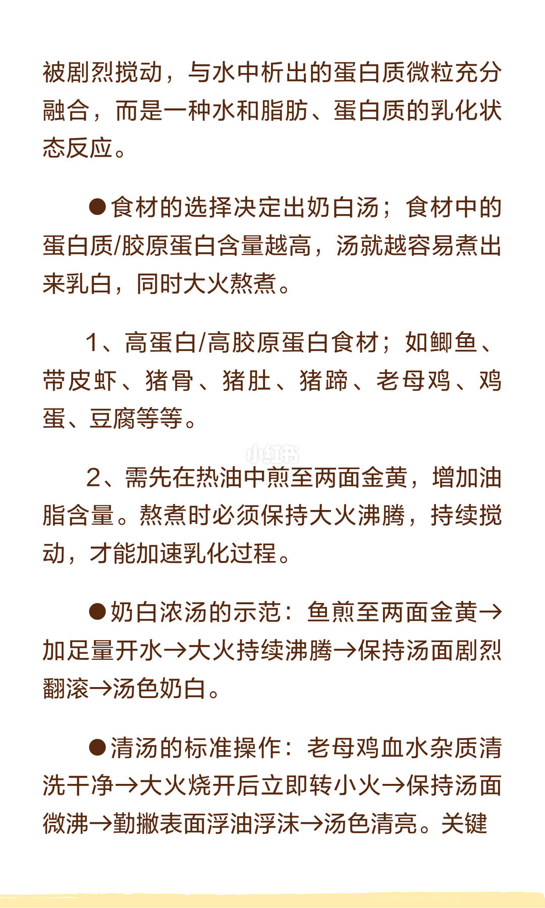
12/14奶白：高胶原食材煎金黄+足量开水+大火翻滚乳化。清汤：烧开转小火微沸勤撇沫。
Milky: sear + rolling boil emulsion. Clear: boil then gentle simmer and skim.
蛋白/胶原越高越易奶白。
第 13 页：汤色三件事与适口
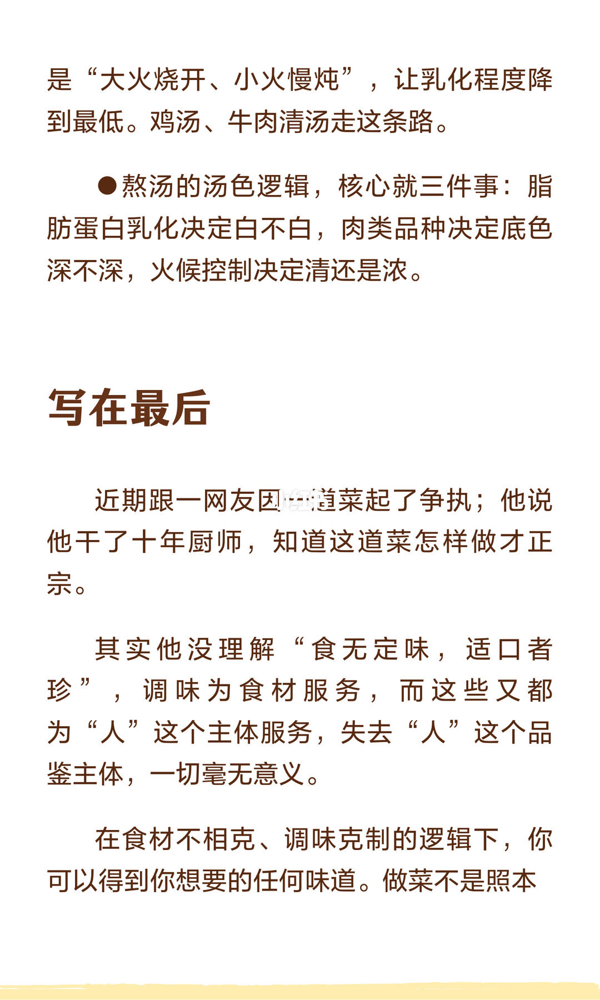
13/14汤色三件事：乳化定白不白、肉种定底色、火候定清浓。结语：适口者珍，调味为人服务。
Emulsion, meat type, heat decide broth; “what suits the palate is precious.”
做菜不是照本宣科争夺「正宗」。
第 14 页：收束
14/14收束页「宣科。」——呼应上文：拒绝照本宣科，回到适口与原理。
Closing stamp against rote “proclaiming the script”—return to palate + principles.
极简收尾，把立场钉死。
文末汇总
核心判断：鱼虾先酸中和胺腥+物理清理；香靠高温油脂与酯化；顺序先色后味后鲜；醋分锅边出香与起锅出味；汤色看乳化。
- 红烧鱼中段锅边醋、出锅再点酸
- 上色前别先大盐
- 要奶白就煎香+翻滚乳化
以上为原笔记图文观点整理，不是对该主题的全面定论。